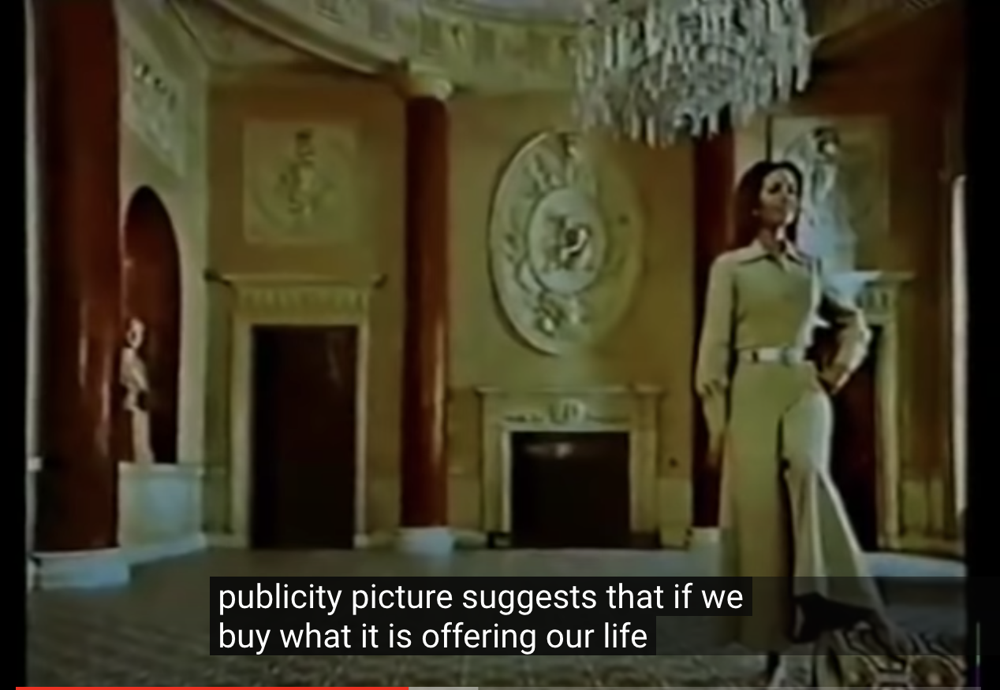

I found some of the points made in this episode very interesting, mostly because it
talked about things that I never truly thought about. You forget about the true authenticity of art because you’re used to seeing it through pictures rather than actually being there. The experience that comes with physically
being there invokes so much more emotion. It’s crazy how the stillness of an image is able to provoke so much emotion. There’s so much backstory behind art that makes up for the beauty of it but we sometimes only take into account what we see.
I really enjoyed the section where Berger talked about how music can influence the meaning of an image. Music in itself provokes so much emotion but when added to art, it can alter the meaning of the piece.
Episode #2: Nude Art & it's Depiction
I think this episode is my favorite out of the whole series, just because it discusses
a topic that we, as a society, have refrained from openly discussing. The idea of nude to me is a socially constructed concept, because we’ve been taught that being nude in public isn’t acceptable.
My favorite part about this episode is when Berger introduced the panel of women who reflected on nude art. A comment that struck me during this panel was that the depiction of nude women simply is for men and will never
amount to the true image of a woman. It’s depicted as if women
are there to feed to the appetite but not allowed to have any of their own.
Listen to the panelist's comment on society's perception of women:
Episode #3 and #4: Oil Paintings & Their Significance

These last two episodes introduced concepts to me that I never really thought about.
The idea behind oil paintings and their portrayal of events has more implications than I had initially thought. In Episode 4, Berger discussed how the oil paintings helped to portray the true reality
of things that were true back then, although you never knew the way they acquired this wealth. Noting this, I took into account the images of today and how much they differ: we pay more attention
to depicting the life that we wish we had rather than what we actually have. In oil paintings,
you see intricacy everywhere, all of which was actually common at the time: clothes, shoes, backgrounds, etc. However, in today’s images, images portray people with extravagant attire, one that is hard to truly imagine.
Although it provokes imagination and thought, I find it crazy how we’ve
digressed from showing the true reality of things.